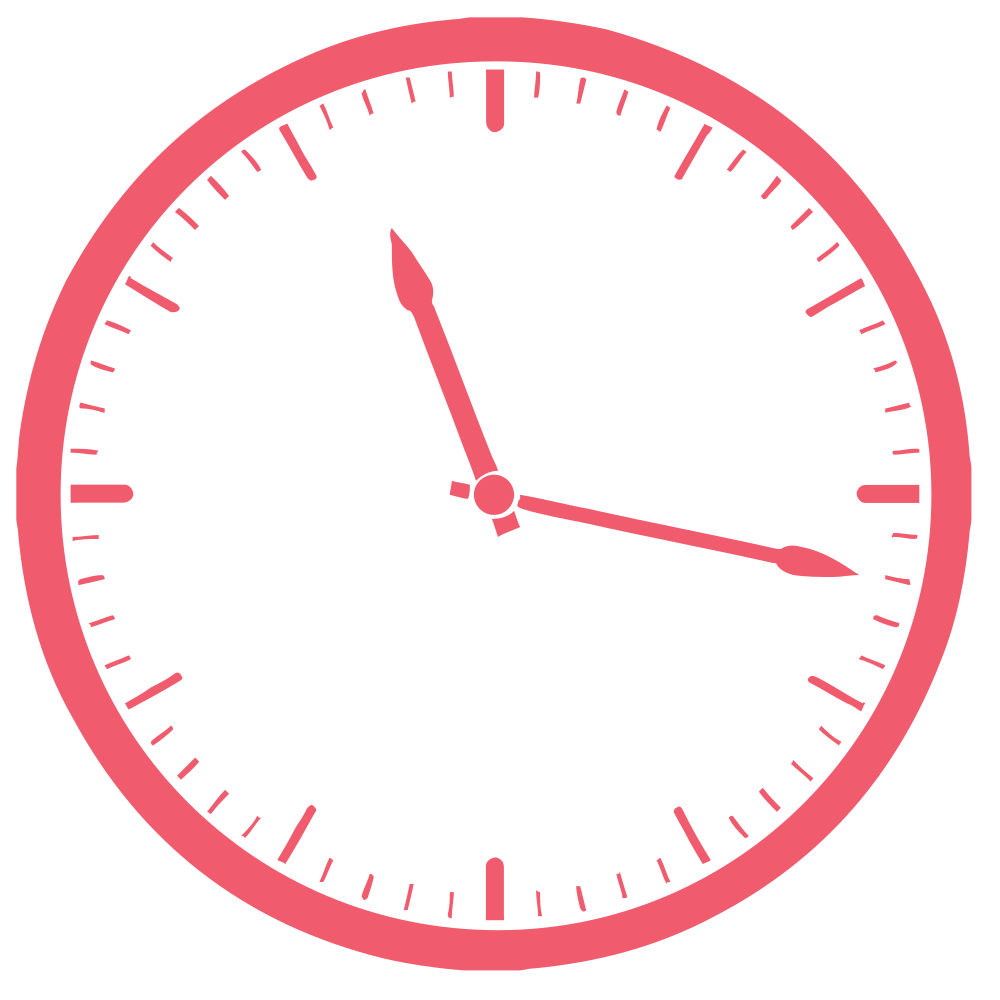

Discover your type, Find Your Lobster pairs you with singles that you will most likely be attracted to.
Caroline is a 22 year old woman who lives in Nepean. She is seeking a male who also wants a relationship.
Alexei is a 28 year old man who lives in Kanata. He is seeking a female who is looking to date, but nothing serious.
Liane is a 25 year old woman who lives in Barrhaven. She is seeking a female who is also looking for someone to marry.
START CREATING YOUR STORY TODAY
Dating is about finding other singles that you connect with. Find Your Lobster makes it easy to find other local users who you can start chatting with today.
Download our app once you finish signing up.
SEE OTHER SINGLES
With Find Your Lobster you can browse through other singles profiles in your area. You can see if you have the same interestes and decide if you want to message them.
PHOTOS
Upload up to 12 photos for other users to see. Upload photos of yourself doing activities you enjoy, photos of your pets or children, or anything you think will help other users get to know you better.
CHAT
Chat with other users you would like to get to know better. Whether you just want to date casually or if you want to find someone to marry, you will be able to find someone to talk to with the same intent.
ONLINE
See when other users are online. If you want a quick responce message someone who is online.
SEE WHO VIEWED YOUR PROFILE
Find Your Lobster allows you to see everyone who has clicked on your profile. You can see the date and time each user viewed your profile.

READ MESSAGES
See when someone reads your messages.